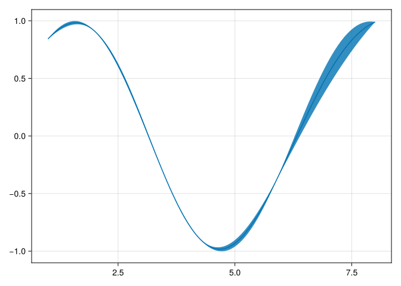

using KernelFunctions, LinearAlgebra, SparseArrays, AbstractGPsusing CairoMakie, AbstractGPsMakie
CairoMakie.enable_only_mime!("png")using ParameterHandling, Optim, ZygoteIn a \(k\)-Nearest Neighbor Gaussian Process, we assume that the input points \(x\) are ordered in such a way that \(f(x_i)\) is independent of \(f(x_j)\) whenever \(i > j + k\). When \(k=2\), for example, this means we can generate the sequence of process values by sampling the first value, then sampling the second given the first, then the third given the first two, then the fourth given the second and third, and so on.
\[ \begin{align*} f_1 &\sim p(f_1) \\ f_2 &\sim p(f_2 | f_1) \\ f_3 &\sim p(f_3 | f_1, f_2) \\ f_4 &\sim p(f_4 | f_2, f_3) \\ \dotsc \end{align*} \]
The conditional distribution for \(f_i\) with \(k\)-predecessors in the set \(S\) has mean \(K_{i, S}K_{S,S}^{-1} f_S\) and variance \(K_{i, i} - K_{i, S}K_{S,S}^{-1} K_{i,S}\). This means we can write the generation procedure as
\[ \begin{align*} f_1 &= \eta_1 \\ f_2 &= K_{2, 1}K_{1,1}^{-1}f_1 + \eta_2 \\ f_3 &= K_{3, (2,1)}K_{(2,1),(2,1)}^{-1}f_{(2,1)} + \eta_3 \\ f_4 &= K_{4, (3,2)}K_{(3,2), (3,2)}^{-1}f_{(3,2)} + \eta_3 \\ \dotsc \end{align*} \] where \(\eta_i \sim \mathcal{N}(0, K_{i, i} - K_{i, S}K_{S,S}^{-1} K_{i,S})\). In matrix form, this means \[ \begin{align*} f &= Bf + \eta f &= (I - B)^{-1}\eta \end{align*} \] where \(B\) is the strictly lower triangular matrix that comes from stacking zero-padded rows of the form \(K_{i, S}K_{SS}^{-1}\). This shows that \(f\) has a precision matrix of the form \(UU^T\) where \(L=(I - B)^TF^{-1/2}\) and \(F\) is diagonal.
Implementation
We assume that pts are in order, and that each point is independent of all the previous ones given the previous k.
function make_B(pts::AbstractVector{T}, k::Int, kern::Kernel) where {T}
n = length(pts)
js = Int[]
is = Int[]
vals = T[]
for i in 1:n
if i == 1
ns = T[]
else
ns = pts[max(1, i - k):i-1]
end
row = kernelmatrix(kern, ns) \ kern.(ns, pts[i])
start_ix = max(i - k, 1)
col_ixs = start_ix:(start_ix+length(row)-1)
append!(js, col_ixs)
append!(is, fill(i, length(col_ixs)))
append!(vals, row)
end
sparse(is, js, vals, n, n)
endmake_B (generic function with 1 method)To the understand the form of the B matrix described above more clearly, consider its form in a 2-nearest neighbor Gaussian Process.
pts = [1.0, 2.0, 3.5, 4.2, 5.9, 8.0]6-element Vector{Float64}:
1.0
2.0
3.5
4.2
5.9
8.0kern = SqExponentialKernel()Squared Exponential Kernel (metric = Distances.Euclidean(0.0))B = make_B(pts, 2, kern)6×6 SparseMatrixCSC{Float64, Int64} with 9 stored entries:
⋅ ⋅ ⋅ ⋅ ⋅ ⋅
0.606531 ⋅ ⋅ ⋅ ⋅ ⋅
-0.242002 0.471434 ⋅ ⋅ ⋅ ⋅
⋅ -0.184647 0.842651 ⋅ ⋅ ⋅
⋅ ⋅ -0.331424 0.495153 ⋅ ⋅
⋅ ⋅ ⋅ -0.0267458 0.116556 ⋅ The \(F\) matrix can be constructed analogously.
function make_F(pts::AbstractVector{T}, k::Int, kern::Kernel) where {T}
n = length(pts)
vals = T[]
for i in 1:n
prior = kern(pts[i], pts[i])
if i == 1
push!(vals, prior)
else
ns = pts[max(1, i - k):i-1]
ki = kern.(ns, pts[i])
push!(vals, prior - dot(ki, kernelmatrix(kern, ns) \ ki))
end
end
Diagonal(vals)
endmake_F (generic function with 1 method)F = make_F(pts, 2, kern)6×6 Diagonal{Float64, Vector{Float64}}:
1.0 ⋅ ⋅ ⋅ ⋅ ⋅
⋅ 0.632121 ⋅ ⋅ ⋅ ⋅
⋅ ⋅ 0.857581 ⋅ ⋅ ⋅
⋅ ⋅ ⋅ 0.356873 ⋅ ⋅
⋅ ⋅ ⋅ ⋅ 0.901874 ⋅
⋅ ⋅ ⋅ ⋅ ⋅ 0.987169The associated covariance matrix has the form \((I-B)^{-1}F(I-B)^{-1}\). We can compare this approximation to the full (non nearest-neighbor) covariance matrix.
L = (I - B) \ sqrt(F)6×6 Matrix{Float64}:
1.0 0.0 0.0 0.0 0.0 0.0
0.606531 0.79506 0.0 0.0 0.0 0.0
0.0439369 0.374819 0.926056 0.0 0.0 0.0
-0.0749706 0.169036 0.780342 0.597388 0.0 0.0
-0.0516836 -0.0405252 0.0794716 0.295798 0.94967 0.0
-0.00401888 -0.00924444 -0.011608 0.0184994 0.11069 0.993564L * L'6×6 Matrix{Float64}:
1.0 0.606531 0.0439369 -0.0749706 -0.0516836 -0.00401888
0.606531 1.0 0.324652 0.0889216 -0.0635677 -0.00978746
0.0439369 0.324652 1.0 0.782705 0.0561348 -0.0143912
-0.0749706 0.0889216 0.782705 1.0 0.235746 0.000731802
-0.0516836 -0.0635677 0.0561348 0.235746 1.0 0.110251
-0.00401888 -0.00978746 -0.0143912 0.000731802 0.110251 1.0kernelmatrix(kern, pts)6×6 Matrix{Float64}:
1.0 0.606531 0.0439369 0.00597602 6.11357e-6 2.28973e-11
0.606531 1.0 0.324652 0.0889216 0.000497955 1.523e-8
0.0439369 0.324652 1.0 0.782705 0.0561348 4.00653e-5
0.00597602 0.0889216 0.782705 1.0 0.235746 0.000731802
6.11357e-6 0.000497955 0.0561348 0.235746 1.0 0.110251
2.28973e-11 1.523e-8 4.00653e-5 0.000731802 0.110251 1.0The two are pretty close!
Interface
To make this usable with Julia’s AbstractGPs library, we’ll add a new method for the posterior function.
struct NearestNeighbors
k::Int
endstruct InvRoot{A}
U::A
endAbstractGPs.diag_Xt_invA_X(A::InvRoot, X::AbstractVecOrMat) = AbstractGPs.diag_At_A(A.U' * X)function AbstractGPs.posterior(nn::NearestNeighbors, fx::AbstractGPs.FiniteGP, y::AbstractVector)
kern = fx.f.kernel
F = make_F(fx.x, nn.k, kern)
B = make_B(fx.x, nn.k, kern)
U = UpperTriangular((I - B)' * inv(sqrt(F)))
δ = y - mean(fx)
α = U * (U' * δ)
C = InvRoot(U)
AbstractGPs.PosteriorGP(fx.f, (α=α, C=C, x=fx.x, δ=δ))
endHere’s how we use it:
y = sin.(pts)6-element Vector{Float64}:
0.8414709848078965
0.9092974268256817
-0.35078322768961984
-0.8715757724135882
-0.373876664830236
0.9893582466233818fx = GP(kern)(pts, 0.0)AbstractGPs.FiniteGP{AbstractGPs.GP{AbstractGPs.ZeroMean{Float64}, KernelFunctions.SqExponentialKernel{Distances.Euclidean}}, Vector{Float64}, LinearAlgebra.Diagonal{Float64, FillArrays.Fill{Float64, 1, Tuple{Base.OneTo{Int64}}}}}(
f: GP{ZeroMean{Float64}, SqExponentialKernel{Distances.Euclidean}}(ZeroMean{Float64}(), Squared Exponential Kernel (metric = Distances.Euclidean(0.0)))
x: [1.0, 2.0, 3.5, 4.2, 5.9, 8.0]
Σy: Diagonal(Fill(0.0, 6))
)Note that the nearest neighbor approximation requires a noise-free GP.
post = posterior(NearestNeighbors(5), fx, y)AbstractGPs.PosteriorGP{GP{ZeroMean{Float64}, SqExponentialKernel{Distances.Euclidean}}, @NamedTuple{α::Vector{Float64}, C::InvRoot{UpperTriangular{Float64, SparseMatrixCSC{Float64, Int64}}}, x::Vector{Float64}, δ::Vector{Float64}}}(GP{ZeroMean{Float64}, SqExponentialKernel{Distances.Euclidean}}(ZeroMean{Float64}(), Squared Exponential Kernel (metric = Distances.Euclidean(0.0))), (α = [0.44959487401574766, 0.634378019439147, 0.31422639172541256, -1.1208602827978673, -0.23967552424377783, 1.0165902480943727], C = InvRoot{UpperTriangular{Float64, SparseMatrixCSC{Float64, Int64}}}([1.0 -0.7628739783668902 … 0.06024322535476907 -0.006784618661573238; 0.0 1.2577665549971213 … -0.12457526770687782 0.0140347496063293; … ; 0.0 0.0 … 1.0570415005635936 -0.12359893384397007; 0.0 0.0 … 0.0 1.0068137091164393]), x = [1.0, 2.0, 3.5, 4.2, 5.9, 8.0], δ = [0.8414709848078965, 0.9092974268256817, -0.35078322768961984, -0.8715757724135882, -0.373876664830236, 0.9893582466233818]))plot(1:0.01:8, post)
Optimizing Hyperparameters
The last thing necessary to make this technique usable in practice is to ensure it works with autodifferentiation so that we can optimize hyperparameters like lengthscales.
initial_params = (var=positive(1.0), lengthscale=positive(1.0))(var = ParameterHandling.Positive{Float64, typeof(exp), Float64}(-1.490116130486996e-8, exp, 1.4901161193847656e-8), lengthscale = ParameterHandling.Positive{Float64, typeof(exp), Float64}(-1.490116130486996e-8, exp, 1.4901161193847656e-8))flat_initial_params, unflatten = ParameterHandling.value_flatten(initial_params)([-1.490116130486996e-8, -1.490116130486996e-8], ParameterHandling.value ∘ ParameterHandling.var"#unflatten_to_NamedTuple#flatten##13"{Float64, @NamedTuple{var::ParameterHandling.Positive{Float64, typeof(exp), Float64}, lengthscale::ParameterHandling.Positive{Float64, typeof(exp), Float64}}, ParameterHandling.var"#unflatten_to_Tuple#flatten##11"{Float64, Int64, Int64, ParameterHandling.var"#unflatten_to_Tuple#flatten##11"{Float64, Int64, Int64, ParameterHandling.var"#unflatten_to_empty_Tuple#flatten##12"{Float64, Tuple{}}, ParameterHandling.var"#unflatten_Positive#flatten##19"{Float64, ParameterHandling.Positive{Float64, typeof(exp), Float64}, ParameterHandling.var"#unflatten_to_Real#flatten##2"{Float64, Float64}}}, ParameterHandling.var"#unflatten_Positive#flatten##19"{Float64, ParameterHandling.Positive{Float64, typeof(exp), Float64}, ParameterHandling.var"#unflatten_to_Real#flatten##2"{Float64, Float64}}}}((var = ParameterHandling.Positive{Float64, typeof(exp), Float64}(-1.490116130486996e-8, exp, 1.4901161193847656e-8), lengthscale = ParameterHandling.Positive{Float64, typeof(exp), Float64}(-1.490116130486996e-8, exp, 1.4901161193847656e-8)), ParameterHandling.var"#unflatten_to_Tuple#flatten##11"{Float64, Int64, Int64, ParameterHandling.var"#unflatten_to_Tuple#flatten##11"{Float64, Int64, Int64, ParameterHandling.var"#unflatten_to_empty_Tuple#flatten##12"{Float64, Tuple{}}, ParameterHandling.var"#unflatten_Positive#flatten##19"{Float64, ParameterHandling.Positive{Float64, typeof(exp), Float64}, ParameterHandling.var"#unflatten_to_Real#flatten##2"{Float64, Float64}}}, ParameterHandling.var"#unflatten_Positive#flatten##19"{Float64, ParameterHandling.Positive{Float64, typeof(exp), Float64}, ParameterHandling.var"#unflatten_to_Real#flatten##2"{Float64, Float64}}}(1, 1, ParameterHandling.var"#unflatten_to_Tuple#flatten##11"{Float64, Int64, Int64, ParameterHandling.var"#unflatten_to_empty_Tuple#flatten##12"{Float64, Tuple{}}, ParameterHandling.var"#unflatten_Positive#flatten##19"{Float64, ParameterHandling.Positive{Float64, typeof(exp), Float64}, ParameterHandling.var"#unflatten_to_Real#flatten##2"{Float64, Float64}}}(0, 1, ParameterHandling.var"#unflatten_to_empty_Tuple#flatten##12"{Float64, Tuple{}}(()), ParameterHandling.var"#unflatten_Positive#flatten##19"{Float64, ParameterHandling.Positive{Float64, typeof(exp), Float64}, ParameterHandling.var"#unflatten_to_Real#flatten##2"{Float64, Float64}}(ParameterHandling.Positive{Float64, typeof(exp), Float64}(-1.490116130486996e-8, exp, 1.4901161193847656e-8), ParameterHandling.var"#unflatten_to_Real#flatten##2"{Float64, Float64}())), ParameterHandling.var"#unflatten_Positive#flatten##19"{Float64, ParameterHandling.Positive{Float64, typeof(exp), Float64}, ParameterHandling.var"#unflatten_to_Real#flatten##2"{Float64, Float64}}(ParameterHandling.Positive{Float64, typeof(exp), Float64}(-1.490116130486996e-8, exp, 1.4901161193847656e-8), ParameterHandling.var"#unflatten_to_Real#flatten##2"{Float64, Float64}()))))function build_gp(params)
k2 = params.var * with_lengthscale(kern, params.lengthscale)
GP(k2)(pts, 0.0)
endbuild_gp (generic function with 1 method)function objective(flat_params)
params = unflatten(flat_params)
fx = build_gp(params)
-logpdf(fx, y)
endobjective (generic function with 1 method)training_results = Optim.optimize(
objective,
θ -> only(Zygote.gradient(objective, θ)),
flat_initial_params,
BFGS(
alphaguess=Optim.LineSearches.InitialStatic(scaled=true),
linesearch=Optim.LineSearches.BackTracking(),
),
inplace=false,
) * Status: success
* Candidate solution
Final objective value: 4.130829e+00
* Found with
Algorithm: BFGS
* Convergence measures
|x - x'| = 2.86e-07 ≰ 0.0e+00
|x - x'|/|x'| = 4.80e-07 ≰ 0.0e+00
|f(x) - f(x')| = 2.19e-12 ≰ 0.0e+00
|f(x) - f(x')|/|f(x')| = 5.31e-13 ≰ 0.0e+00
|g(x)| = 4.43e-09 ≤ 1.0e-08
* Work counters
Seconds run: 0 (vs limit Inf)
Iterations: 11
f(x) calls: 18
∇f(x) calls: 12With optimized parameters, we get much less uncertainty in our predictions.
plot(1:0.01:8, posterior(NearestNeighbors(5),
build_gp(unflatten(training_results.minimizer)), y))